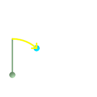
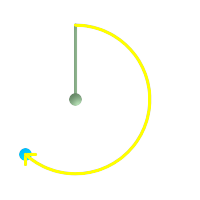

ST_Azimuth — pointAの鉛直線からPointBへの右回りの方位を北を基準にしたラジアン単位で返します。
float ST_Azimuth(geometry pointA, geometry pointB);
float ST_Azimuth(geography pointA, geography pointB);
与えられたポイントジオメトリで定義される線分の方位をラジアン単位で返します。2点が一致する場合にはNULLを返します。方位は北を基準として時計回りに計測します。北は0、東はπ/2、南はπ西は3π/2になります。
ジオグラフィに対しては、前方の方位は測地線逆問題の一部として解きます。
方位は、基準面と点の間の角度と定義される数学的概念です。PostgreSQL組み込み関数degrees()を使うと単位を度に変換できます。下に例を挙げます。
Availability: 1.1.0
Enhanced: 2.0.0 ジオグラフィ対応が導入されました。
Enhanced: 2.2.0 精度とロバスト性向上のために回転楕円体面上の計測をGeographicLibで行うようにしました。この新機能を使うには、Proj 4.9.0以上が必要です。
ST_Azimuthは、ST_Translateと併用して、垂直軸に沿ってオブジェクトをシフトさせる場合に、特に便利です。これの例として、Plpgsqlfunctions PostGIS wiki sectionを参照して下さい。
度単位のジオメトリの方位
SELECT degrees(ST_Azimuth(ST_Point(25, 45), ST_Point(75, 100))) AS degA_B,
degrees(ST_Azimuth(ST_Point(75, 100), ST_Point(25, 45))) AS degB_A;
dega_b | degb_a
------------------+------------------
42.2736890060937 | 222.273689006094
 緑: 開始点 (25,45)で、鉛直方向に行きます。黄: degA_Bを示す行程 (方位)です。
|  緑: (75,100)が開始点で、鉛直方向に行きます。黄: degB_Aを示す行程 (方位)です。
|